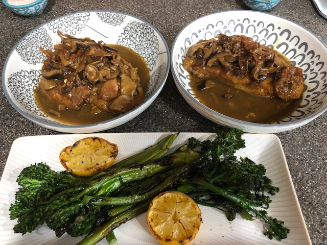

Chicken Marsala

Chicken Marsala with Shittake Mushrooms, Prosciutto,
and Grilled Broccolini
One of my favorite dishes to make. This receipe was originally
obtianed from
Tyler Florence of Food Network
but I've given my own twist on the dish by substituing shittake mushrooms.
Ingredients
- 2 skinless, boneless chicken breasts
- All-purpose flour
- Salt and ground black pepper
- 1/4 cup extra-virgin olive oil
- 4 ounces of prosciutto
- 5 ounces shittake mushrooms
- 1/2 cup sweet Marsala wine
- 1/2 cup chicken stock
- 4 tablespoons unsalted butter
- One bunch of Broccolini
- One lemon
Steps
- Wrap the chicken breast with plastic wrap and place them on a cutting board.
Pound them thin with a meat mallet, until they are 1/4-inch thick.
- Place the flour in a shallow dish or pan, mixing with salt and pepper.
- Dredge the chicken in the seasoned flour mixture, making sure to coat both sides.
- Heat the olive oil in a large skillet over medium-high heat.
- Fry the chicken in the pan, 5 minutes per side, or until they are godlen brown.
- Remove the chicken and place them in a large platter to keep warm.
- Lower the heat to medium and add the prosciutto to the pan to render out the fat, approx 1-2 minutes.
- Place the shittake mushrooms in the skillet with the prosciutto and sautee until they are nice and brown, approx 5 minutes.
- Pour the Marsala into the pan with the prosciutto and mushrooms, allow the marsala to boil down to cook off the alcohol.
- Add in the chicen stock and allow it to simmer, stir in the butter and return the chicken to the pan.
- Grill the broccolini for approx. 5 minutes or until you have a nice char. The lemon should but cut in half and placed face down, approx 1 minute.
- Season with salt and pepper and any garnish you prefer